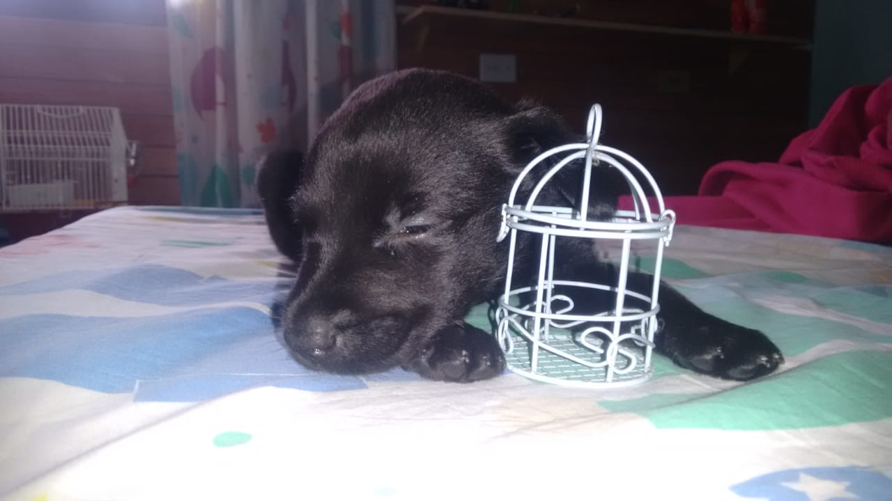

Nasceu no dia 7 de novembro de 2016, danado e maluno como o dono. Sempre Rasgando tudo porquê o bixo é brabo. Iria ganhar o nome de ki-suque, mas não deixei e preferir dar o nome de Black. Eu tinha apenas 12 anos de idade.
Com sua beleza e a ajuda da minha mãe, teve suas sessões de fotos como se fosse um modelo.